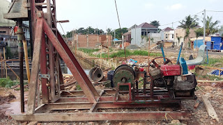

Jasa Pekerjaan Bore Pile Strausspile Murah Kepulauan Seribu
Pondasi bor pile yakni suatu jenis pondasi dalam dengan pondasi dalam lainya merupakan yang metode pengerjaanya dimulai dari pengeboran tanah menggunakan alat bor sampai kedalaman yang sudah direncanakan, kemudian dipasang kerangka besi tulangan dan langkah berikutnya dilakukan pengecoran dengan cara pengecoran bor pile merupakan memakai pipa tremi sebagai penghantar beton sampai dasar lubang memakai beton sitemix atau redymix. Pondasi bor pile adalah salah satu solusi pondasi yang memenuhi prasyarat teknik dan specifikasi bangunan untuk menunjang daya serta kesetabilitasan sebuah bangunan yang berdiri.
Pondasi tipe bor pile yang dijadikan dengan alat minicrane sekarang menjadi pilihan pondasi dalam yang sangat pas untuk pondasi bangunan dengan keadaan lahan pembangunan yang berdekatan dengan permukiman warga,daerah rawa dan diatas sungai. Jasa Pondasi Borepile di Kepulauan Seribu mesin mincrane mempunyai kemudahan dalam pengerjaan pelaksanaanya dan dapat menjangkau lokasi kerja dengan akses sempit dan susah yang tak memungkinkan mengaplikasikan alat berat dalam pembuatan pondasi dalam variasi lainya.
Mungkin sebab jaman dahulu masih banyak lahan tanah yang luas dan kosong yang artinya belum banyak bangunan yang berdiri sehingga pondasi yang tak jarang di pergunakan merupakan tiang pancang pukul atau droph hammer, sebab dilahan yang luas getaran yang ditimbulkan tak demikian itu mengganggu ligkungan sekitar. Seiring perkembangan jaman dan pesatnya pembangunan menjadikan lokasi menjadi rapat bangunanoleh bangunan sekeliling. Oleh sebab itu pemakaian pondasi tipe tiang pancang pukul tak dapat banyak di pergunakan di zona yang sempit dan sulit malahan di area permukiman warga. Kecuali getaran yang di timbulkan dari progres pemancangan, akses menuju lokasi yang seharusnya mengaplikasikan armada besar. Bored pile dengan alat bor pile minicrane disaat mobilisasi cukup menerapkan armada colt diesel. Dimana alat bor pile minicrane telah di rancang kusus sedemikian rupa untuk mobilisasi menggunakan armada kecil dan untuk pembuatan pondasi bor pile ditempat daerah yang sempit dan susah.
Metode Pondasi Bor Pile

Tahap cara pembuatan pondasi bor pile hal yang mesti dipersiapkan yaitu lahan kerja terlebih dahulu demi kelancaran dalam pengerjaan proses pekerjaan pembuatan bor pile, apabila saat mobilisasi alat baru mempersiapkan lahan yang terjadi yakni menghalangi pengerjaan seting alat sampai waktu progres bor pile akan tertunda. Untuk itu ada sebagian hal persiapan bor pile seperti:
- Menetapkan titik AS pondasi bor pile dengan metode memasang bowplank khususnya dulu untuk menarik as spot pengeboran yang akan di kerjakan.
- Melakukan pembongkaran pondasi lama yang berada pada spot pondasi bor pile yang akan di kerjakan karena bekas pondasi lama tidak dapat dikerjakan pengeboran. Bekas pondasi lama dari batu ataupun beton maka wajib dibersihkan sehingga pengeboran bot pile dapat dijalankan dengan baik.
- Perataan lokasi sehingga dalam profesi pembuatan bor pile tak mengalami kesusahan yang tinggi. Lokasi profesi yang tanahnya rata akan mengurangi hambatan pekerja dalam memposisikan dan pindah alat. Progres pekerjaan bor pile akan lebih gampang dengan keadaan medan yang rata.
- Memindahkan saluran air dan instalasi listrik aktif yang kalau mengganggu dalam proses bor pile. Saluran listrik yang tertanam dan masih aktif akan sungguh-sungguh berbahaya terhadap sisi kemamanan terhadap pekerja. Untuk itu saluran listrik dan saluran air perlu dipindahkan hingga tidak mengganggu waktu cara kerja bor pile, saluran listrik yang berada di ataspun sama wajib dipindahkan bila mengganggu progres pengeboran.
- Mempersiapkan air kerja untuk pelaksanaan pengeboran ataupun untuk pengecoran lubang bor pile. Pengeboran tanah umumnya seharusnya memakai cara wash boring seandainya kedalaman yang di butuhkan lebih dari 9meter atau jika kondisi tanah tak memungkinkan untuk dikerjakan bor kering.
- Menjalankan pengadaan matrial seperti besi, pasir batu koral semen dan alat aduk beton jikalau mengaplikasikan beton sitemix melainkan kalau pengecoran bor pile menggunakan redymix karenanya order beton bisa dilakukan setelah lubang bor pile memiliki volume 7kubik sama dengan volume kendaraan beroda empat beton.
Pembuatan Pondasi Bor Pile
Pada pengerjaan pembuatan pondasi bore pile bisa di lakukan dengan dua cara merupakan dry drilling / bor kering & wash boring / bor basah
Dry Drilling / Bor Kering
Cara bor kering / dry drilling ialah penggalian tanah dengan sistem pengeboran layak dimensi diameter yang telah ditetapkan perencana yang nantinya akan diisi besi tulangan yang sudah di rakit/instal kemudian di lakukan pengecoran beton di tempat. Sistem cara kerja bor kering / dry drilling kerap kali di gunakan saat kedalaman bor pile yang dibutuhkan tak melalui batas tingkatan air tanah setempat dan optimal diameter cuma 40cm dengan bor minicrane.
Cara Bor pile kering adalah pengalian tanah dengan tanah dibor dengan mesin bor minicrane dan mata bor yang diterapkan yaitu macam spiral/auger dan diputar sejalan jarum jam dengan bantuan tenaga listrik dari gensead 380volt yang di alirkan ke dalam elektro motor 15hp dan gearbox type wpx 155 rasio 1:30 sehingga menjadi rankaian pemutar pipa batang bor sebagai pemutar mata bornya. Dalam pengeboran bor kering dikerjakan secara bertahap merupakan setiap pengeboran 0.5meter kedalaman atau sesudah jikalau mata bor auger telah terisi penuh oleh limbah pengeboran berupa tanah mesti diangkat dan dibuang terutama dahulu. Pengankatan mata bor di bantu dengan gerakan dessel power winch – / + 2ton.
Limbah pengeboran yang diwujudkan setiap pengangkatan berupa tanah dan di buang disamping luabang bor yang bila tak mengganggu pengerjaan pengeboran titik selanjutnya. Cara pengeboran ini di lakukan berulang-ulang hingga menerima kedalaman cocok perencanaan bor pile yang telah di tentukan untuk pondasi bangunan tersebut. Sekiranya kedalaman lubang sudah mencapai perencanaan karenanya tahap selanjutya yakni pemasangan besi tulangan yang sudah di rakit / instal . Besi di angkat/ tarik dengan tali seling dengan bantuan dessel power winch dan dimasukan ke dalam lubang bor yang sudah siap secara hati-hati agar tak terlalu banyak singgungan dengan dinding lubang bor untuk mengindari kerusakan.
Kemudian tahap selanjutnya merupakan cara kerja pengecoran lubang.
Progres pengecoran bor kering / dry drilling pemakaian pipa tremi tidak seperti itu diperlukan. Cukup dengan seperti mengerjakan pengecoran pada kolom bangunan merupakan cor dituang dilubang secara seketika. Akan melainkan jika lubang bor pile hal yang demikian terdapat genangan air, karenanya pengecoran harus mengaplikasikan pipa tremi/chasing sebagai alat bantu pengecoran yang berfungsi mengerjakan pengecoran yang diawali dari dasar lubang dan sekalian menyokong air tersebut untuk keluar dari dalam lubang bor untuk menerima hasil yang optimal. Pengecoran di hentikan setelah lubang terisi penuh dengan beton murni atau tak tercampur lumpur.
- PENGEBORAN
- Pengeboran lubang bor pile basah / wash borring ialah tanah dibor dengan mengaplikasikan mata bor cross bit ex design layak yang dibutuhkan dan memiliki kecepatan 375 rpm bobot tekanan +/- 200 kg. Kalau tanah permukaan gampang runtuh bisa dikasih chasing sementara untuk menghindari kelongsoran lubang pada pengerjaan pengeboran. Abrasi tanah pada waktu pengeboran dibantu dengan tembakan air melalui batang pipa bor yang diciptakan dari pompa NS-80. Dalam hal ini supaya tanah yang terkikis menjadi lumpur dan terdorong oleh air sehingga keluar dari lubang pengeboran. Setelah pengeboran menempuh kedalaman cocok perencanaan, pengeboran dihentikan dan sementara mata bor diperkenankan berputar akan melainkan tapi muatan penekanan mata bor dihentikan dan air sirkulasi dibiarkan tetap mengalir sampai serpihan tanah terdorong keluar dari lubang seluruhnya. Selama pembersihan ini berlangsung,wajib mempersiapkan besi tulangan dan pipa tremi ke dekat lubang bor. Sesudah cukup bersih, stang bor diangkat dari lubang bor. Dengan bersihnya lubang pengecoran akan mendapatkan hasil yang terbaik.
- PEMBERSIHAN
- Tahap kedua yaitu pembersihan lubang bor pile dari lumpur pekat yang terjadi dikala pengeboran berlangsung. Pembersihan lubang bor pile harus dikerjakan dengan alat pembersih kusus dengan ukuran yang cocok dengan diameter lubang bor yang akan dibersihkan.
- PEMASANGAN BESI BETON DAN PIPA TREMI
- Kerangka besi tulangan dipersiapkan sebelumnya diangkat dengan bantuan power winch hingga posisi besi tegak lurus kepada lubang dan diturunkan secara berhati-hati supaya tidak terjadi banyak singgungan dengan dinding lubang bor. Besi tulangan yang telah dimasukan dalam lubang bor dibendung dengan potongan tulangan melintang untuk melakukan penyambungan Kalau kebutuhan besi tulangan lebih dari 12 meter dengan diikat dengan kawat beton dengan panjang overlap layak layak pada gambar yang di sediakan. Setelah besi tulangan terpasang, pipa tremi patut segera dimasukkan kedalam lubang dengan panjang pantas kedalaman lubang bor. Apabila pada waktu pemasangan baja tulangan terjadi singgungan dan terjadi keruntuhan,karenanya diperlukan pembersihan ulang dengan memasang head kombinasi diameter 6 “ke diameter 2”. Dengan memompa air kedalam stang bor dan pipa tremi, karenanya reruntuhan dan tanah yang merekat pada besi tulangan bisa dibersihkan kembali.
- PENGECORAN
- Untuk memisahkan beton dari lumpur limbah pengboran pada awal pengecoran, karenanya seharusnya dinggunakan kantong plastik yang diisi beton dan diikat dengan tali kawat bendrat dan digantung dibagian dalam lubang tremi sekitar satu hingga dua meter kebawah dari corong tremi. Sesudah persiapan pengecoran selesai, beton slump 18+-2cm ditampung didalam corong tremi dan dibendung oleh bola plastik yang telah dipasang sebelumnya, sesudah cukup penuh bola kantong plastik dilepas sehingga beton mendorong lumpur yang berada didalam lubang tremi. Pengecoran dilakukan secara terus-menerus untuk menghidari kemacetan pada pipa tremi pada dikala pengecoran bor pile. Dengan cara tremi ini pengecoran dimulai dari dasar lubang dengan menyokong air / lumpur dari bawah menuju keluar lubang via luar pipa tremi. Setelah pipa tremi penuh dan ujung pipa tremie tertanam beton sehingga beton tak dapat mengalir karena ada tekanan dari bawah. Untuk memperlancar adukan beton didalam pipa tremi, karenanya sepatutnya dijalankan hentakan-hentakan pada pipa tremi dengan mengayun kpling power winch. Pipa tremi sepatutnya selalu tertanam di dalam adukan beton dan pengisian di dalam corong semestinya dijaga terus menerus agar corong tidak kosong. Pipa tremi dilepas setiap 3 meter akan tetapi ujung pipa di dalam seharusnya dalam kondisi tertanam di dalam beton.Pengecoran dihentikan sesudah beton yang naik ke permukaan sudah bersih dari dari lumpur.
Dalam tahap ini pengecoran bor pile sudah selesai dan menunggu kering maksimal baru dapat dikerjaakan tahap profesi selanjudnya yaitu memasang pile cup.
Pemakaian pondasi dalam metode bor pile sekarang banyak diminati oleh kontraktor awam ataupun perorangan. sebab pemakain pondasi bor pile lebih praktis dalam cara kerja pembuatanya bahkan tak minimbulan getaran dikala pengerjaanya. Pondasi bor pile kerap diaplikasikan pada daerah rapat permukiman penduduk dan lokasi yang tidak memungkinkan menggunakan alat berat dalam progres pembuatan pondasi tipe pondasi dalam. Disamping harga relatif murah pondasi bor pile mengaplikasikan bor mini crane dapat dikatakan ramah lingkungan. Sebab alat yang di pakai tak memunculkan getaran yang menyebabkan kerusakan pada dinding bangunan sekitar.
Informasi Lengkap Pemesanan
Google Maps: https://www.google.com/maps/d/u/0/viewer?mid=1geX-pEtwaOCViyVP_Gqua38xYRdAH9br&ll=-7.273095009659554%2C112.64519995&z=16
Note: https://www.facebook.com/notes/distributor-of-industrial-supply/kontraktor-jasa-pondasi-bor-borepile/1785207878445758/
Event: https://www.facebook.com/events/198898100658018/
Portfolio Produk: https://www.facebook.com/1681607345472479/photos/?tab=album&album_id=1683775621922318
Behance: https://www.behance.net/gallery/60203009/Jasa-Pondasi-Beton-Borepile